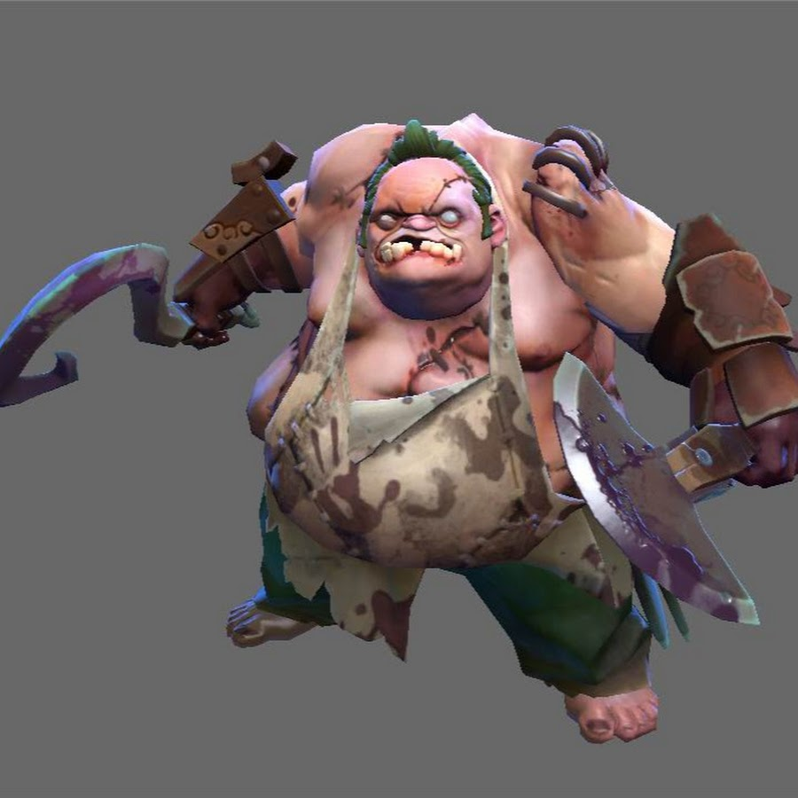

Pudge: как он притягивал врагов
своим хуком

Pudge со своим крюком
Каждый точный бросок знаменитого крюка вселял страх в его врагов, ведь, притянув жертву, он расчленял её своим тесаком.
С каждым убийством его орудие становилось острее, а сияние красной маски безумия - ярче; с каждым съеденным пельменем
его зловонные ароматы все сильнее отравляли окружающую его временно живую плоть. Кто знает, выжил бы известный мясник,
не заметив он сочный хинкаль, окруженный ловушками подлых неприятелей..
Узнать о мяснике